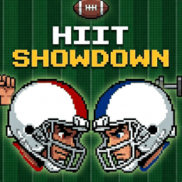
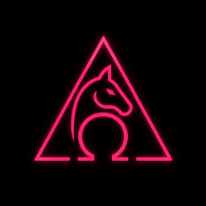
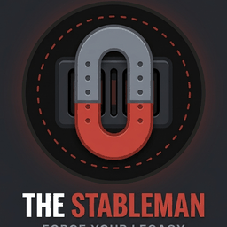

Helpful materials for Monarch PAX — beatdown apps for Q's, F3 lingo, and other useful links.
Beatdown apps Q's can use to plan and run a workout.

Football-themed team challenge with race to reps for TDs, and Q defined challenges for extra points and turnovers. How to play

A retro arcade style timed fitness challenge with dynamic scoring and powerboosts. How to play

Keep getting 1% better through a series of missions and challenges.
New to F3? Here's a rundown of the lingo you'll hear at the AO. Tap a category to expand it.
F3
Stands for Fitness, Fellowship, and Faith (defined broadly as belief in a purpose higher than oneself).
1st F (Fitness)
The physical workout component that gets men out of bed.
2nd F (Fellowship)
The social bonds, conversations, and community built before, during, and after workouts.
3rd F (Faith)
Community leadership, philanthropy, and pushing men to serve others and be better leaders.
HIM (High Impact Man)
A dedicated member who leads by example in his family, workplace, and community.
PAX
The participants or members attending an F3 workout (short for “passengers” or “people”).
FNG (Friendly New Guy)
A newcomer attending their first F3 workout who receives an official nickname at the end of the session.
Q / QIC (Q-in-Charge)
The member leading and instructing the workout for that day.
Site Q
The volunteer responsible for overseeing a specific workout location.
The M
A member's spouse or significant other.
2.0
A member's child.
YHC (Your Humble Correspondent)
How a leader refers to himself when writing up the Backblast summary.
AO (Area of Operations)
The physical venue where the workout takes place (e.g., a park, parking lot, or field).
Backblast (BB)
A written report posted online summarizing the workout details, attendance, and highlights.
Coffeteria / Beerteria
Gathering for coffee (morning) or beverages (evening) immediately following the workout to build community.
CSAUP (Completely Stupid And Utterly Pointless)
An endurance event or extra-tough challenge designed to test grit and build camaraderie (e.g., a multi-hour night ruck or marathon).
Downrange
Attending an F3 workout in a different city or region while traveling.
Fartsack / Fartsacking
Staying in bed instead of waking up to work out.
HC (Hard Commit)
A firm promise or confirmation that you will show up to a scheduled workout.
Mumble Chatter
Casual talking, banter, or lighthearted complaining during a workout to build morale.
Post
Showing up and participating in a workout.
Shovel Flag
An American flag or regional banner mounted on a shovel, stuck into the ground to mark the workout starting point.
The Gloom
The dark, pre-dawn hours when morning F3 workouts take place.
AYG (All You Got)
Sprinting or giving maximum effort.
Ball of Man (BOM)
Huddling up shoulder-to-shoulder or taking a knee at the end of the COT for a brief closing thought or prayer.
Beatdown (BD)
The main 45-to-60-minute boot-camp style workout.
COR (Count-o-rama)
Counting the total number of men present at the end of the workout.
COT (Circle of Trust)
The closing gathering where announcements, personal reflections, support requests, or prayers are shared.
Coupon
Any heavy object used as a weight during exercises—most commonly a standard 8-inch concrete cinder block.
IC (In Cadence)
Performing exercises together while the leader counts the tempo out loud.
Mary
The dedicated abdominal/core portion near the end of the workout.
Modify
Adjusting an exercise to fit your current fitness level or physical limitations (“Modify as needed, not as wanted”).
Mosey
A light jog used to move the group from one station or area to another.
NOR (Name-o-rama)
Going around the circle at the end where everyone states their real name, age, and F3 nickname.
OYO (On Your Own)
Completing a set number of exercise repetitions at your own individual pace.
The Six
Your backside/rear, or the group running at the back of the pack. “Picking up the six” means stronger runners loop back so no man is left behind.
The Thang
The main section of the workout (circuits, intervals, hill runs, or routines).
Warm-a-Rama
The 5-minute dynamic warm-up at the beginning of the workout.
Carolina Dry Dock
A pike push-up with hips held high in a V-shape, lowering your head toward the ground to target the shoulders.
Derkin (Decline Merkin)
A push-up with your feet elevated on a bench, curb, or wall to increase upper-chest intensity.
Diamond Merkin
A push-up with your hands touching to form a diamond shape under your chest to isolate the triceps.
Hand-Release Merkin
A push-up where you lower all the way down, lift your hands completely off the ground for a split second, and push back up.
Incline Merkin
A push-up with your hands elevated on a bench or curb to lighten the load.
Merkin
A standard push-up.
Peter Parker
A plank or push-up where you bring your knee out to the side toward the same-side elbow.
Ranger Merkin
A push-up performed with hands placed close to the ribs and elbows pinned tightly against the sides.
Werkin (Wide Merkin)
A push-up performed with hands set significantly wider than shoulder-width apart.
American Hammer
Sitting in a boat-pose position with feet lifted, holding a weight or clasping hands, and rotating the torso to touch the ground on each side.
Big Boys
Full sit-ups starting flat on your back with arms extended overhead, sitting all the way up to touch your feet.
Flutter Kicks
Lying on your back with hands under your glutes, keeping legs straight while alternating small up-and-down kicks.
Freddy Mercury
Bicycle crunches performed lying flat on your back, cycling your legs while reaching the opposite elbow to the opposite knee.
Hello Dolly
Lying on your back with legs straight, opening and closing them horizontally in a scissor motion.
LBC (Little Baby Crunch)
A quick, controlled ab crunch with knees bent at 90 degrees and fingertips behind the ears.
Plankama (or Plank-a-rama)
Holding standard planks while alternating variations (e.g., side planks, shoulder taps, or leg lifts).
Protractor
Lying on your back while the leader calls out leg-elevation angles (e.g., 30°, 45°, 90°) for static core holds.
Rosalita
Lying flat on your back, raising both legs straight up to a 90-degree angle, opening them wide, and bringing them back together.
Air Squats
Standard bodyweight squats performed with proper depth and hips breaking parallel.
Al Gore
Holding a static squat position at a 90-degree angle with arms extended forward (a nod to “standing still” like a statue).
Bobby Hurley
A jump squat where you reach down to touch the ground with one hand, then explode upward into a jump while reaching high with the other.
Bonnie Blair
Alternating reverse jumping lunges (jumping side to side into a lunge position).
Hillbilly
A standing march bringing the knee up diagonally while touching the opposite elbow to it with hands behind the head.
Imperial Stormtrooper (IST)
Standing upright, kicking one straight leg high while reaching the opposite hand out to touch the toes.
Monkey Humpers
Standing in a wide stance, grabbing your ankles or calves, and raising and lowering your hips to work the glutes and hamstrings.
Bear Crawl
Moving forward on all fours with hands and feet on the ground, keeping knees hovered just above the grass.
Burpee
Standard 4-step exercise: squat, kick feet back to a plank, perform a push-up, jump feet back in, and jump vertically with hands overhead.
Crab Walk
Sitting on the ground, lifting your hips up using your hands and feet behind you, and traveling forward or backward.
Gorilla Walk
Bending deep into a low squat, placing hands on the ground in front, and hopping your feet forward to meet your hands in a wide stance.
Groiner
Starting in a high plank position, jumping both feet forward so they land wide on the outside of your hands, then jumping back to a plank.
Side Straddle Hop (SSH)
Standard jumping jacks.
Smurf Jacks
Jumping jacks performed entirely while staying low in a partial squat position.
Catch Me If You Can
A partner routine where Partner A performs exercises while Partner B moves forward using a designated travel method; Partner A then sprints to catch up and swap roles.
Dora (or Dora 1-2-3)
A team-of-two workout where Partner A works on cumulative exercise reps while Partner B runs a set distance, switching off until all target reps are completed.
Elevens (11s)
A ladder workout between two physical points. You do 10 reps of Exercise A at Point 1 and 1 rep of Exercise B at Point 2, adjusting counts so the sum always equals 11.
Indian Run
A single-file group run where the person at the very back sprints to the front to take the lead.
String of Pearls
A workout structure where the group moseys between multiple stops, executing a set of exercises at each station along the way.
Miscellaneous sites and resources worth a look.